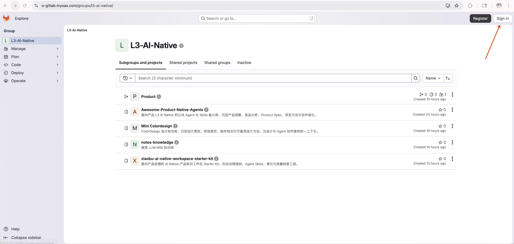
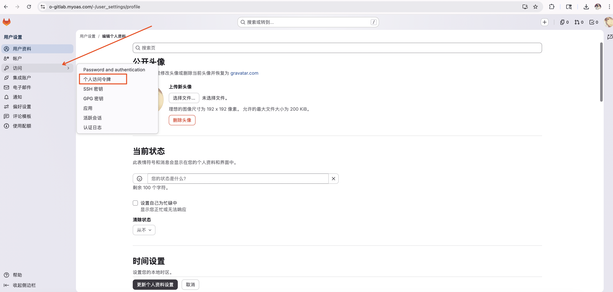
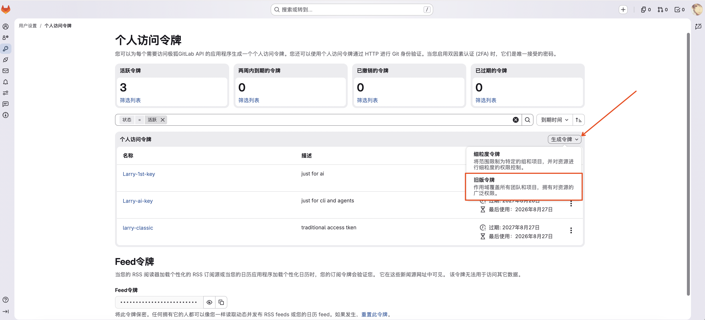
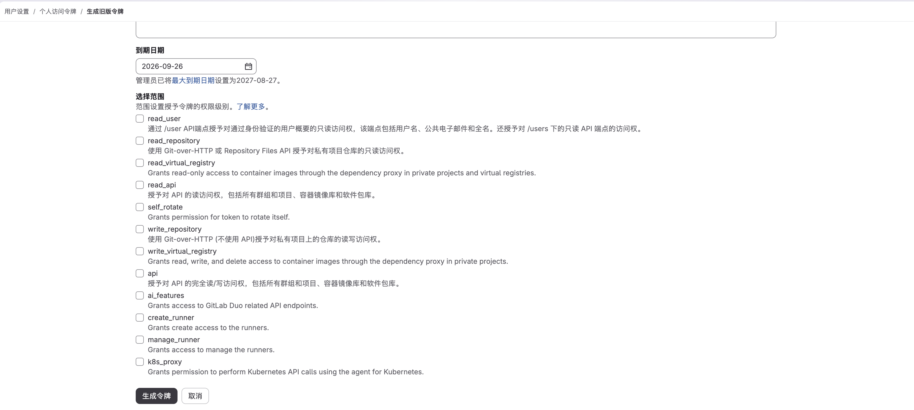

不用为每个项目
重新教 AI
GitLab 自带命令行和接口，AI 已经理解这套通用用法：找到项目、读取资料、提交修改，都有现成的路径。
GitLab 让 AI 读取同一份项目资料、保留每次修改记录，并把未经确认的改动隔离在独立分支中，经过检查后再合入正式版本。
已获得项目地址，准备 clone 并读取项目规则。
✓GitLab 不只是放文件的地方。它给 AI 一套熟悉的入口，把资料、协作、自动执行和每次修改的来龙去脉放在一起，让 AI 更容易理解，也让人更容易检查。
GitLab 自带命令行和接口，AI 已经理解这套通用用法：找到项目、读取资料、提交修改，都有现成的路径。
知识库、页面、自动检查、机器人和执行环境可以接在一起，让 Agent 从“读懂”一路走到“完成并交付”。
项目仓库保存当前版本、修改记录和讨论依据。大家看同一份内容，AI 也从这里开始，不再反复寻找“到底哪份是真的”。
第一次完成登录、令牌和业务项目配置。之后每个任务都遵循同一条路径：从正式版本开新分支，修改并检查，通过合并请求确认后再合入。
按下面 1–4 步操作。右侧图示也要跟着点击切换 Tab 查看，不同 Tab 对应不同页面位置。
Sign in，先完成公司账号认证。



点击“新建项目”，选择“创建空白项目”。所有业务项目必须进入组织指定的同一个 Group，不能散落在个人空间。项目命名应让别人一眼看懂业务；初始化 README，让项目从第一天就有说明、负责人和正式分支。
note-design-knowledge。打开目标项目首页，点击“代码”，在“使用 HTTPS 克隆”区域复制项目地址。不要把用户名和令牌直接拼进 URL。
项目首页 → 代码 → 使用 HTTPS 克隆 → 复制地址
提供用户名、PAT 和项目 HTTPS 地址。AI 应先检查 Git，再 clone 项目并验证当前分支、远端地址和仓库状态，最后读取 README、AGENTS.md 等项目规则。
请帮我把一个 GitLab 项目 clone 到当前工作区。 GitLab 用户名：<用户名> Personal Access Token：<刚创建的令牌> Clone with HTTPS：<项目 HTTPS 地址> 请按顺序完成： 1. 检查 git --version；如果 Git 未安装或 user.name / user.email 未配置，先告诉我。 2. 使用以上信息完成认证并 clone 项目。不要回显令牌，不要把令牌写入 URL、仓库、配置文件、日志或聊天摘要。 3. 进入项目后运行 git status、git remote -v、git branch --show-current。 4. 读取 README、AGENTS.md、CONTRIBUTING 和其他项目说明。 5. 最后告诉我 clone 是否成功、当前分支和需要遵守的项目规则。 现在不要修改、提交或推送任何内容。
main 代表大家正在使用的正式版本。每次新需求都从最新的 main 创建一个短期任务分支，完成后再申请合入；这样修改未确认时不会影响其他人。
AI 在任务分支中完成修改并运行检查。它先展示结果和变化对比；你确认无误后，再提交并推送这个任务分支。
请完成下面的任务： 任务目标：<要新增或修改什么> 验收标准： - <结果 1> - <结果 2> - <需要通过的检查> 请先同步最新默认分支，并按 feat/、fix/ 或 docs/ 创建一个能表达任务目的的新分支。然后完成修改、运行项目要求的检查并查看 git diff。 完成后先告诉我： 1. 修改了什么； 2. 检查是否通过； 3. 是否还有风险。 在我明确确认前，不要提交、推送或创建合并请求。
合并请求不是形式流程，而是一次集中确认：为什么改、改了什么、怎么证明可用、还有什么风险。信息不完整、检查未通过或审核意见未解决时，不合入正式版本。
别人只看标题和摘要，也能知道为什么要改。
一次合并请求只解决一个主题，便于检查和回退。
检查结果、预览、限制和风险都留在记录里。
相关负责人完成审核，未解决意见不能带入 main。